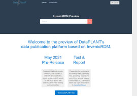

A service developer and administrator in DataPLANT Jonathan Bauer from the University of Freiburg gave a presentation on the current state of the deployment of InvenioRDM for the Science Data Center coordination working group on infrastructure. The Invenio repository software is getting production ready and will be deployed as a DataPLANT service for data publication. KeyCloak is providing authentication services and bwSFS ("storage-for-science" in Baden-Württemberg) offering the storage backend (in the form of an object storage). At the moment the service installed as single instance but a Kubernetes cluster installation is envisioned in the long run to serve larger amount of data and users. Authentication in Invenio is possible via OpenID connect and OAuth, it offers built-in ORCID login.

Invenio is evaluated for a while already within the context of BioDATEN project and got chosen for its fitness for the purpose of open data publication. Records in the repository could be individually controlled for data and meta data. An embargo (holding period) can be applied to a record which is not publicly available until the embargo has ended. Special viewing and edit links can be generated and shared. A range of persistent identifiers can be applied, primarily support for the DataCite DOIs. It is possible to specify existing DOIs or mint new ones. Additional related identifiers can also be specified like e.g. ARK, arXiv, handle. The integration with 3rd-party services is exposed through REST APIs. This enables a lot of potential integrations with other services like auto-update profile on new publications, integration with the Science Gateway of BioDATEN for e.g. discovering or the publication of templates. For Github or GitLab webhooks could be used to publish code releases in a fixed version. We hope to publish the ARC specification in its first version on it in the near future.